News
New $899,868 collaborative NSF award, with me as PI: Designing Civic AI to Connect Residents, Communities, and Local Governments. Joint with Aron Culotta, Nicholas Mattei, and Carnegie Mellon University colleagues Motahhare Eslami and John Zimmerman.
Two papers and a demo accepted to ASSETS 2026: a scoping review of accessible data visualization research, plus an ASL video comprehension tool and demo led by Chaelin Kim.
Awarded three internal grants totaling ~$26,000, including the Jurist Summer Fellowship in AI, the Data, AI, and Community Research Grant, and the Lavin-Bernick Grant, to support research on AI-based reading support tools and accessible personal health visualizations.
Paper on ASL educators’ perspectives on AI accepted to CHI 2026. Will present it at the conference in Barcelona!
Earlier news
Congrats to lab member Nikhil Modayur for receiving an Honorable Mention for the 2026 CRA Outstanding Undergraduate Researcher Award!
Attending ASSETS 2025 in Denver to present one paper on reading support technologies and two demos.
Two demos accepted to ASSETS 2025, led by Chaelin Kim and Nazmun Nahar Khanom, on text simplification and an ASL learning tool for EMS. Will be presented at the conference in Denver!
Our workshop on participant recruitment in accessibility research was accepted to ASSETS 2025.
Our review of reading support tools, with Oliver Alonzo, was accepted to ASSETS 2025 and nominated for Best Paper.
Awarded a Carol Lavin Bernick Faculty Grant ($10,000) for our AI-Powered ASL Learning Platform and a Community-Engaged AI Summer Research Program grant ($8,500) to build a public accessibility barrier dashboard.
Matyas Bohacek presented our paper on an AI-driven video-based ASL dictionary at W4A 2025 in Sydney.
Brad Myers visited the lab here in New Orleans to talk about his new book Pick, Click, Flick!: The Story of Interaction Techniques! Talk details here.
FSboard, an ASL fingerspelling dataset built with Google Research and DPAN, accepted to CVPR 2025.
One paper on multimodal affective captioning with haptics accepted to CHI 2025 in Yokohama! I also served on the PC and Best Paper Award committee.
Received an NSF IUCRC Planning Grant as a Co-PI to establish the Tulane University partner site for the Center for Accessible Healthcare through AI-Augmented Decisions (AHeAD).
Congrats to Aaron Gershkovich for receiving an Honorable Mention for the 2025 CRA Outstanding Undergraduate Researcher Award!
Our journal article exploring video-span selection for ASL learners was published in ACM TACCESS.
Attending ASSETS 2024 virtually to present two posters on a rich closed-captioning format and designing for neurodivergent scholars. Also serving as Workshop Chair!
Attended HCOMP 2024 in Pittsburgh and co-organized the PACE workshop with Motahhare Eslami, Aron Culotta, Nick Mattei, and Mah Noor.
Aaron Gershkovich presented a poster at the undergraduate symposium.
Thrilled to welcome Chaelin Kim, Nazmun Nahar Khanom, and Syeda Mah Noor Asad to the lab!
Attending CHI 2024 in Honolulu to present two papers on affective captions and a dance video comprehension tool (both received Honorable Mentions!). Also served on the PC and Best Paper Award committee.
Visited Rochester to officially be hooded for my PhD. a year after defending.
Awarded a Tulane Committee on Research (COR) Fellowship ($5,000) for reading support tools for people who are deaf or hard of hearing.
Received a $102,281 Louisiana Board of Regents award as PI for our project, "Enhancing Expressive and Receptive ASL Learning Using AI-Powered Tools".
Lab member Nazmun Nahar Khanom presented a demo of AI-based reading support tools at the Tulane Research, Innovation, and Creativity Summit (TRICS).
Attended the CRA Early Career Workshop in Washington, D.C. Met prgram officers and fellow junior tenure track faculty.
Attended NeurIPS 2023 right here in New Orleans. I was part of a paper on sign language data collection for popsign game.
Congrats to Aaron Gershkovich for winning the "Best Prototype" award at the Annual Undergraduate Poster Session!
Jonathan Pool from CVS health visited the lab!
Gave a talk at the inaugural Tulane AI Symposium.
My colleague and also recent minted PhD Willie Payne visit the lab.
Visited Pittsburgh to give a talk at Duolingo (and CMU) related to my Duolingo Dissertation Award.
Attended ASSETS 2023 to present a demo of an automatic video-based ASL dictionary system and served as Proceedings Chair.
Paper from my Google internship with Thad Starner was accepted at MobileHCI 2023! Thad will present it in Athens.
Moved to New Orleans to start my tenure-track Assistant Professor position at Tulane University.
Passed my PhD defense! Hugely grateful to my committee: Matt Huenerfauth, Kristen Shinohara, Garrett W. Tigwell, and Danielle Bragg.
Wrapped up my Student Researcher role at Google Research. It was great working with the sign language understanding team over the past two years.
Flew straight to Austin to attend W4A and present two papers on visual exploration of TV news and modeling word importance.
Attended CHI 2023 in Hamburg to present a poster on automatically generated emotive captions and served as an Associate Chair for Late-Breaking Work track.
Started a new Student Researcher role at Google to work on sign language input for mobile devices.
Wrapped up my Student Researcher role at Meta. More details to come.
Passed my dissertation proposal and officially became a PhD candidate! Thanks to my committee members for feedback!
Attended my first in-person ASSETS 2022 in Athens to present a paper on video-span search for ASL comprehension and a poster on learner preferences for ASL feedback. Also served on the Program Committee for the first time.
RIT wrote a nice article about my work: Saad Hassan: Researching at the Intersection of Computing and Accessibility.
Thrilled to be one of the six recipients of the 2022 Duolingo Dissertation Research Grant!
Moved back to Rochester to wrap up my PhD while continuing to work as a Student Researcher for Meta.
Attended (my first) LREC 2022 in Marseille to present our 2020 and 2022 papers at the SLRP workshop.
Our paper on using BERT embeddings to model word importance was accepted to the LT-EDI workshop at ACL 2022.
Started an internship at Meta Reality Labs in Redmond, WA. Excited to work with the audio experiences team, meet folks in Seattle area, and hike around.
Attended (my first) CHI 2022 in person in New Orleans to present two papers on hybrid sign language dictionary search and a caption-occlusion metric.
Presented my work on designing a video-based ASL look-up system at the CHIIR 2022 Doctoral Consortium.
Two papers accepted at CHI 2022! These are my first papers at CHI after two and a half years as PhD student
Had a great time attending EMNLP in person in Punta Cana, DR presenting our paper on ableist bias in NLP systems. This is my first in person conference since starting my PhD! Met a lot of NLP/Linguistics people.
Our journal article on the effect of sign-recognition performance on the usability of sign-language dictionary search was published in ACM TACCESS.
Attended ASSETS 2021 virtually.
Finished my summer internship at Google AI Research, but continuing as a Student Researcher.
Presented a paper on the effect of occlusion on deaf and hard of hearing users’ perception of captioned video quality at the HCII conference (virtually).
Started a research internship at Google Research, working with Thad Starner, George Sung, and Manfred Georg. I will be working on sign language understanding and data collection.
Attended the W4A 2021 conference and was part of a paper on caption occlusion severity judgments.
Attended (my first) ASSETS conference virtually.
Presented a short paper on a search-by-video sign-language look-up dictionary at the ECCV SLRTP workshop. Presented it virtually from a campsite near Lake George :)
Passed my RPA (Research Potential Assessment) exam!
Our dataset paper was accepted to the LREC SLRP workshop. Unfortunately, the workshop got cancelled due to the Covic pandemic.
Moved to Rochester, NY to start my PhD with Matt Huenerfauth at the CAIR Lab. Enjoyed some time road tripping and hiking in beautiful finger lakes region.
Publications
2026
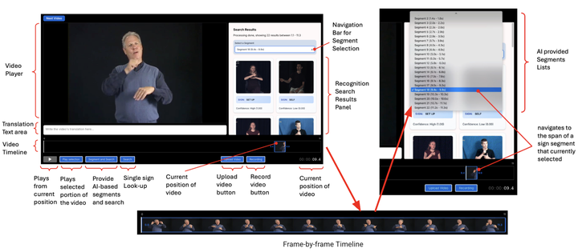
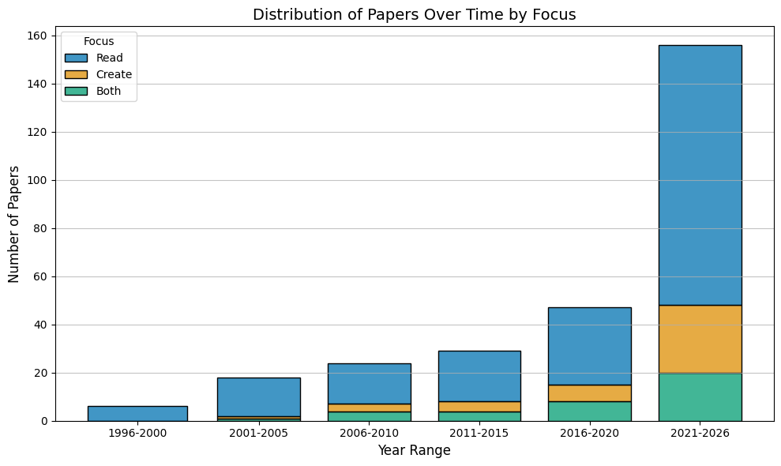
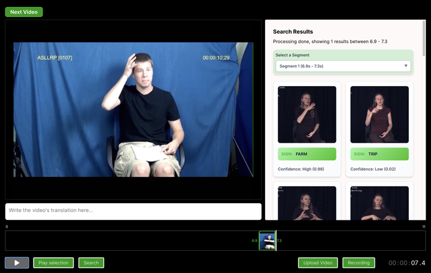
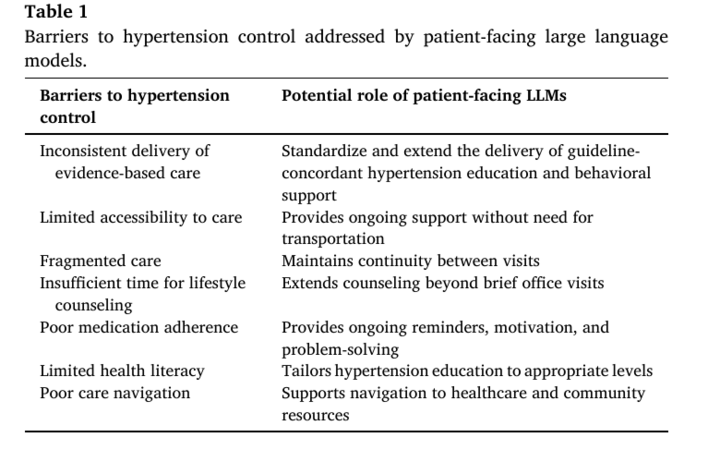
2025
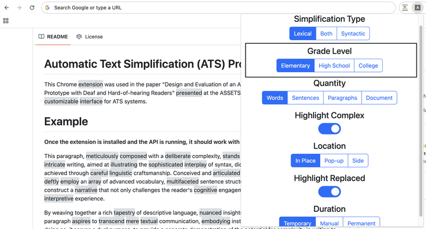
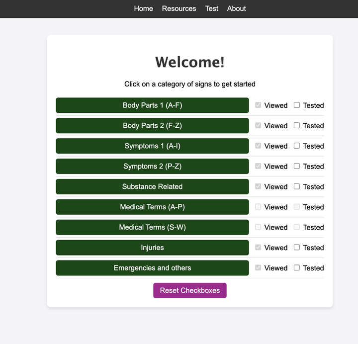
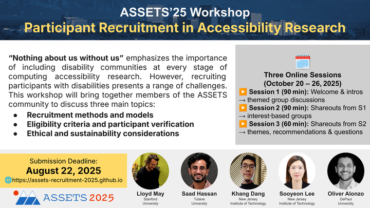
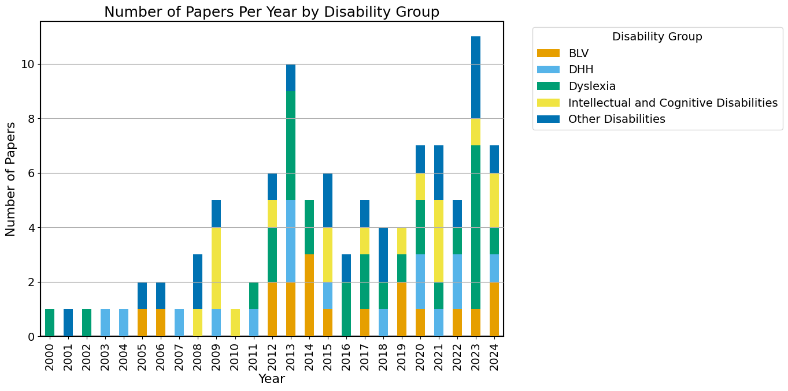

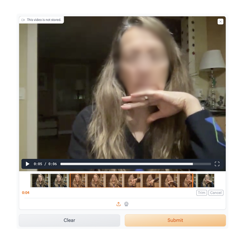

2024
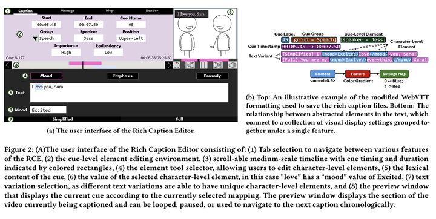
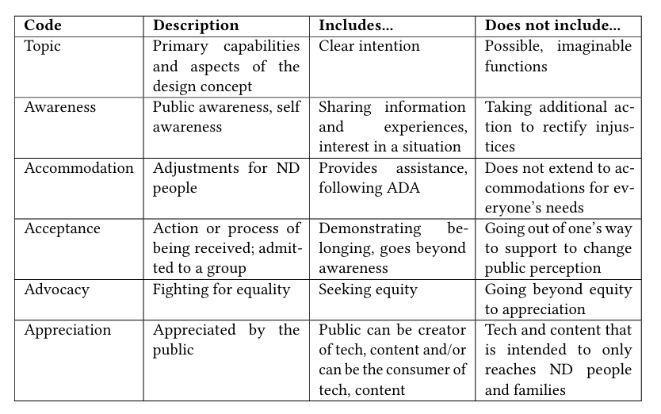

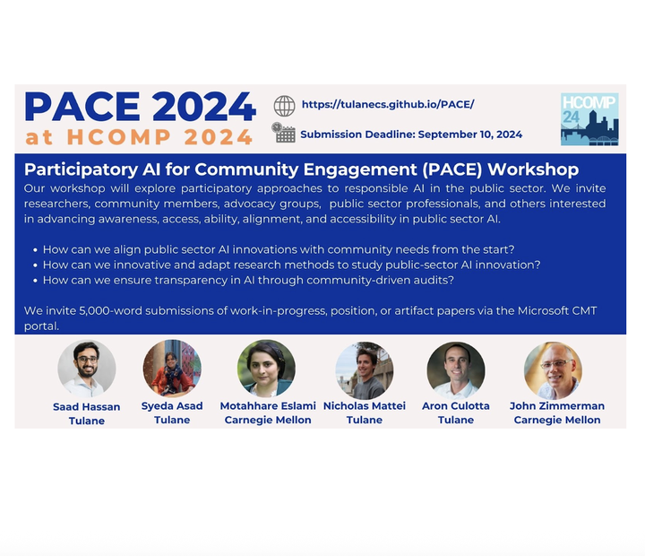


2023

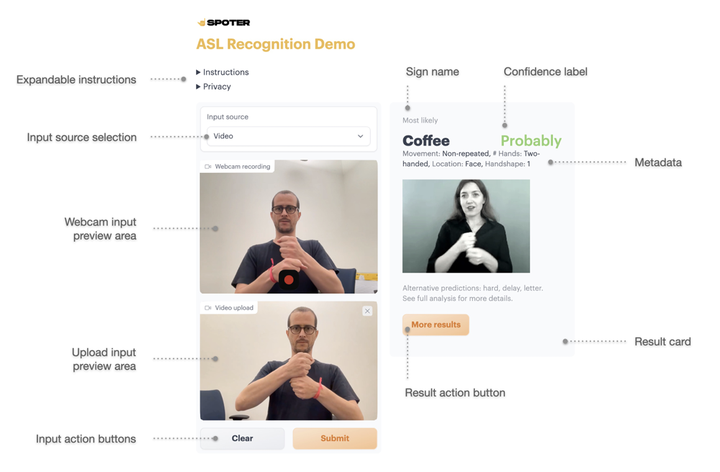
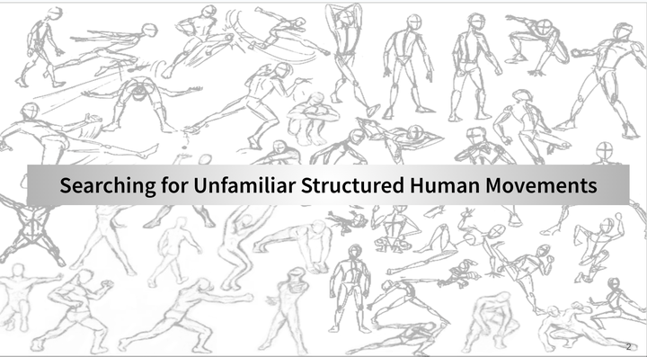
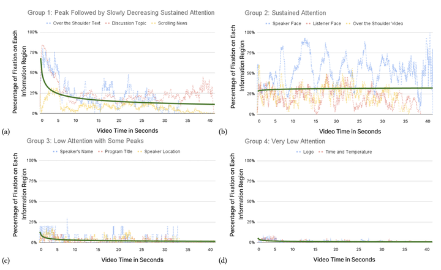
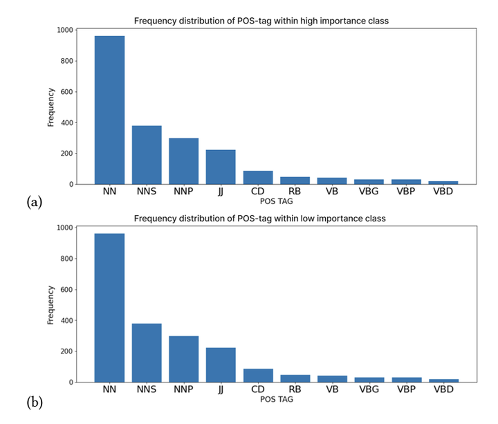
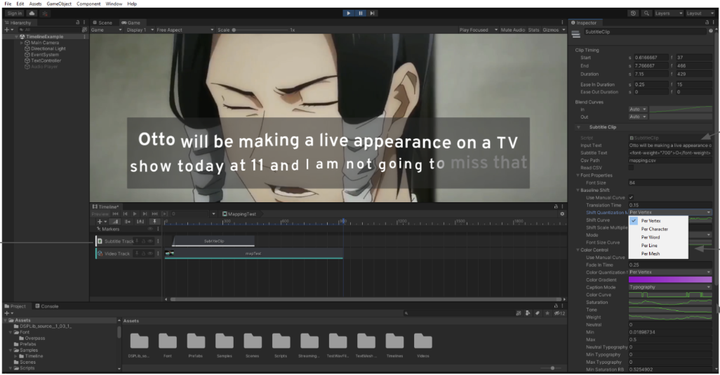

2022
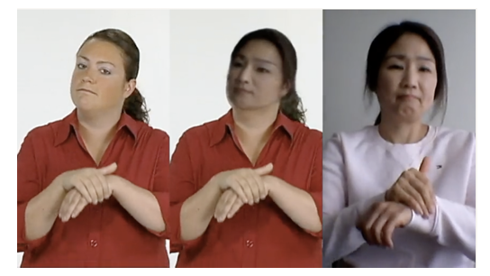

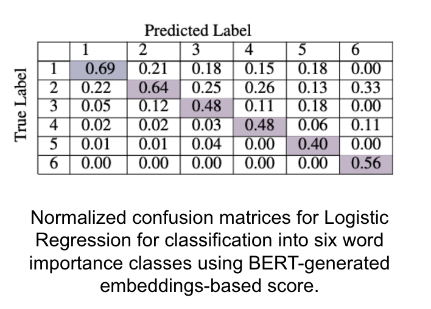
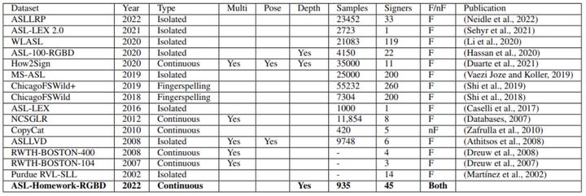


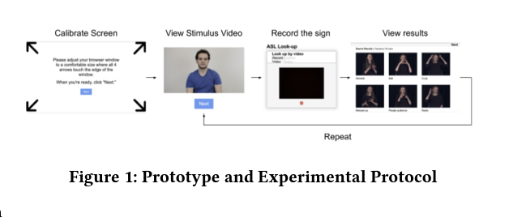
2021


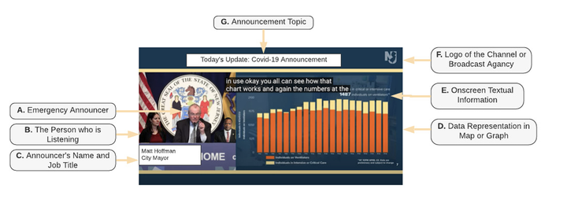
2020
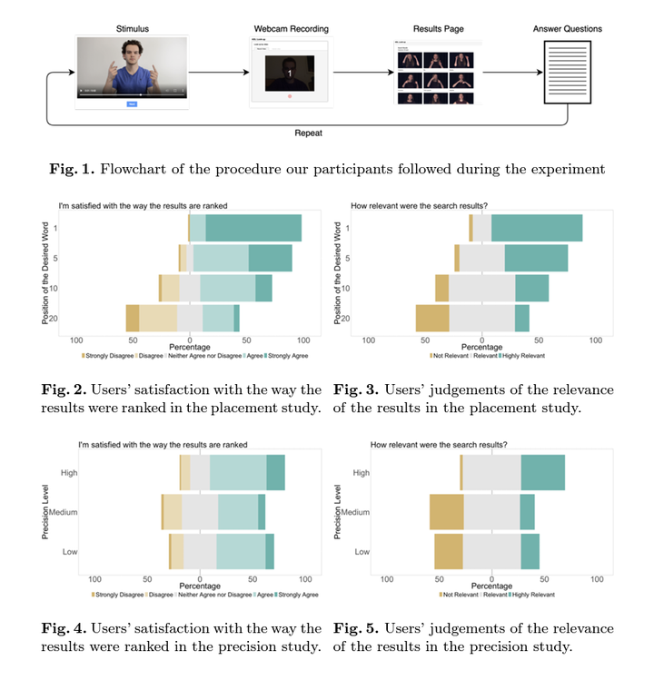

{kind=link}
{kind=link}
* Equal contribution